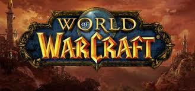

World of Warcraft
World of Warcraft (também conhecido pelo acrônimo WoW) é um jogo on-line do gênero MMORPG, desenvolvido e distribuído pela produtora Blizzard Entertainment e lançado em 2004. O jogo se passa no mundo fantástico de Azeroth, introduzido no primeiro jogo da série, Warcraft: Orcs & Humans, lançado em 1994.
É considerado o mais popular MMORPG de todo o mundo, tendo chegado a ter 11 milhões de jogadores ativos no ano de 2010. Em 2016, contava com 5 milhões de jogadores regulares.
Joga-se com um programa cliente ligado a uma rede de servidores. Existem servidores para atender Estados Unidos, Oceania, Europa, Rússia, China, Coreia do Sul, Taiwan, Sudeste Asiático, Brasil e América Latina. O acesso aos servidores requer uma chave original e é pago mensalmente, mediante assinatura com dinheiro real ou com ouro conquistado dentro do jogo. A partir de julho de 2011, o jogo também passou a ser distribuído sem custos por meio da versão Starter Edition, que permite ao jogador ir até o nível 20 de personagem dentro do jogo (veja mais na subcategoria "Versão Gratuita de World of Warcraft" abaixo).
Expansões
Voltar
- World of Warcraft: The Burning Crusade ("A Crusada Ardente"): primeira expansão do jogo, na qual foram adicionadas duas novas raças (Elfos Sangrentos e Draenei), além de novos cenários in game. Foi acrescentado um mapa correspondente a um novo mundo, denominado Terralém, o qual se localiza do outro lado do Portal Negro, construído pela Legião Ardente (Burning Crusade) a fim de ligar Azeroth a esse novo planeta, dando início à caçada às forças malignas superiores da história. São acrescentadas duas novas profissões ao sistema já existente: Joalheria (Jewelcrafting) e Encantamento (Enchanting) (maiores detalhes na subcategoria "Profissões"). Nível máximo de personagem aumentado de 60, estabelecido na versão Clássica (Vanilla), para 70. Lançada em 16 de janeiro de 2007.
- World of Warcraft: Wrath of the Lich King ("A Fúria do Lich Rei"): em sua segunda expansão, o jogo ganha um novo cenário: um continente ao norte dos já existentes Reinos do Leste e Kalimdor, chamado Nortúndria (Northrend), governado pelo Lich Rei, Arthas, que mantém um exército de lacaios mortos vivos e ameaça a vida em Azeroth. O jogo ganha, também, uma nova classe, os Cavaleiros da Morte (Death Knights) (ver a subcategoria "Classes"). Nível máximo de personagem: 80. Anunciada em 03 de agosto de 2007 e lançada em 13 de novembro de 2008.
- World of Warcraft: Cataclysm ("Cataclismo"): terceira expansão do MMORPG, trata da história do aspecto dracônico Asa da Morte (Deathwing), o qual, corrompido pelos Deuses Antigos após muitos anos em contato com as profundezas de Azeroth, retorna à superfície do planeta para espalhar o caos e a destruição. Foram adicionadas as raças Goblin, para a facção da Horda, e Worgen, para a rival Aliança, com quests iniciais exclusivas, inacessíveis para personagens de outras raças. Nível máximo de personagem: 85. Anunciada em 21 de agosto de 2009 e lançada em 07 de dezembro de 2010.
- World of Warcraft: Mists of Pandaria ("Névoas de Pandária"): quarta expansão do jogo, seguindo Cataclysm, trouxe ao jogo o novo cenário da ilha de Pandária, localizada ao sul do mapa, entre os Reinos do Leste e Kalimdor, local em que se abrigam misteriosas raças, as quais, até então, viviam reclusas do mundo exterior. Também foi introduzida uma nova raça, os Pandarens (também referidos apenas como "pandas"), e uma nova classe: Monge (Monk) (ver "Raças" e "Classes" adiante). Nível máximo de personagem: 90. Anunciada em 21 de outubro de 2011 e lançada em 25 de setembro de 2012.
- World of Warcraft: Warlords of Draenor ("Senhores da Guerra de Draenor"): a quinta expansão de World of Warcraft transporta os jogadores a um momento crucial no passado do mundo de Draenor, onde grandes lendas do passado brutal de Warcraft devem ser combatidas. Os heróis de Azeroth se transportam para o novo mapa a fim de se encontrar com campeões tais como Grommash Grito Infernal, Mão Negra e Ner'zhul, em uma realidade alternativa na qual os orcs nunca foram corrompidos pela Legião Ardente. Nível máximo de personagem: 100. Anunciada em 08 de novembro de 2013 e lançada em 13 de novembro de 2014.
- World of Warcraft: Legion ("Legião"): o sexto pacote de expansão do jogo explora os eventos em que a Tumba de Sargeras foi aberta, permitindo que os demônios da Legião Ardente invadam Azeroth na tentativa de trazer o próprio Titã Sombrio Sargeras ao planeta. Os jogadores vão em busca de armas artefato lendárias de Warcraft e vasculham as Ilhas Partidas, nova região introduzida no jogo, em busca de relíquias titânicas para os auxiliar nesse momento. Introduzida a nova classe heróica Caçador de Demônios (Demon Hunter). Nível máximo de personagem: 110. Anunciada em 06 de agosto de 2015 e lançada em 30 de agosto de 2016.
- World of Warcraft: Battle for Azeroth ("A Batalha por Azeroth"): em sua sétima expansão, os eventos do jogo desencadeiam uma série de incidentes desastrosos que reacendem o conflito central da saga Warcraft, acentuando o conflito entre Horda e Aliança. Os heróis de Azeroth partem numa jornada para recrutar novos aliados, disputar recursos valiosos e combater em diversas linhas de frente para determinar quem conduzirá o futuro incerto de Azeroth. Foram incluídas as Raças Aliadas (adiante listadas), específicas para cada facção. Nível máximo de personagem: 120. Anunciada em 03 de novembro de 2017 e lançada em 14 de agosto de 2018.
Novidades
Voltar| Nome da Expansão | Data de Lançamento | Novas Raças | Novas Classes | Nível Máximo de Personagem |
|---|---|---|---|---|
| World of Warcraft: The Burning Crusade | 2007 | Draenei, Blood Elf | Nenhum | 70 |
| World of Warcraft: Wrath of the Lich King | 2008 | Nenhum | Death Knight | 80 |
| World of Warcraft: Cataclysm | 2010 | Goblin, Worgen | Nenhum | 85 |
| World of Warcraft: Mists of Pandaria | 2012 | Pandaren | Monk | 90 |
| World of Warcraft: Warlords of Draenor | 2014 | Nenhum | Nenhum | 100 |
| World of Warcraft: Legion | 2016 | Elfo Caótico, Draeneis Forjados a Luz, Filhos da Noite, Tauren Altamontês | Demon Hunter | 110 |
| World of Warcraft: Battle for Azeroth | 2018 | Anão Ferro Negro, Kultireno, Gnomecânico, Orc Mag'har, Troll Zandalari, Vulperas | Nenhum | 120 |
Raças
Voltar
- Humano/Humana: O reino humano de Ventobravo é a espinha dorsal da Aliança. A disposição de Ventobravo para cooperar com outros povos e encontrar soluções diplomáticas é uma de suas maiores forças. Os habitantes se aferram aos princípios de honra e justiça que norteiam o reino enquanto defendem seus povoamentos e a Aliança de agressores.
- Anão/Anã: Os bravos e audazes anões são uma raça ancestral que descende dos terranos — seres de pedra viva nascidos da forja titânica quando o mundo era jovem. Oriundos da portentosa cidade de Altaforja, entranhada nos picos nevados de Khaz Modan, os anões são corajosos defensores da Aliança.
- Elfo Noturno/Elfa Noturna: A ancestral e reclusa raça noctiélfica — também conhecida como os kaldorei — desempenhou um papel fundamental na definição do destino de Azeroth. Lutando pela Aliança, muitos dos elfos noturnos de hoje ainda se lembram da Guerra dos Antigos, ocorrida mais de dez mil anos atrás, quando eles rechaçaram a primeira invasão da Legião Ardente a Azeroth. Os ferozes elfos noturnos lutarão com unhas e dentes para garantir que suas terras sagradas jamais voltem a ser maculadas pelo mal.
- Gnomo/Gnomida: Os inteligentes, ousados e não raro excêntricos gnomos representam um paradoxo único entre as raças civilizadas de Azeroth. Seu notável otimismo diante da calamidade simboliza o inabalável espírito gnômico, e sua criatividade e engenhosidade sem fim só se comparam ao seu comprometimento para com a causa da Aliança.
- Draenei/Draenaia: Fugindo das ruínas de Terralém — os restos dilapidados do planeta outrora conhecido como Draenor —, os misteriosos draeneis desembarcaram em Azeroth, onde juraram lealdade à Aliança e prometeram destruir seu inimigo jurado, a demoníaca Legião Ardente. Com a derrota da Legião, os draeneis agora buscam um novo destino sob a bênção da Luz.
- Worgen/Worgenin: Atrás da imponente Muralha Greymane, uma terrível maldição transformou o irredutível povo do reino longínquo de Guilnéas em criaturas lupinas conhecidas como worgens. Incapazes de curar sua aflição e sitiados pelos temíveis Renegados, os worgens aprenderam a controlar a ferocidade graças à ajuda dos elfos noturnos. Agora, eles estão prontos para libertar suas feras interiores de uma vez por todas em defesa da Aliança.
- Orc/Orquisa: Os orcs outrora viviam como clãs xamanísticos no mundo exuberante de Draenor. Corrompidos por Kil’jaeden, um lorde-demônio da Legião Ardente, eles invadiram o mundo de Azeroth. Quando enfim se libertaram das influências demoníacas, os orcs se estabeleceram em Kalimdor, erigindo a grande capital de Orgrimmar — de onde lutam para encontrar seu lugar no mundo que tinham vindo conquistar.
- Morto-Vivo/Morta-Viva (Renegado/Renegada): A morte não deu trégua para a profusão de humanos mortos durante a campanha do Lich Rei para varrer os vivos de Lordaeron. Quando seu domínio sobre o Flagelo se esfacelou após a Terceira Guerra, um contingente de mortos-vivos se libertou da vontade férrea de seu mestre. Adotando o nome de Renegados, eles agora lutam para prosperar em um mundo que abomina sua existência.
- Tauren/Taurena: Os pacíficos taurens — conhecidos por sua própria língua como os shu’halo — há muito vivem em Kalimdor, sempre empenhados em preservar o equilíbrio da natureza em nome de sua deusa, a Mãe Terra. Depois de viver como nômades na natureza, as tribos taurenas se uniram e se estabeleceram em Mulgore, suas terras ancestrais.
- Troll/Trolesa: Os orgulhosos exilados Lançanegra estavam à beira da extinção quando o Chefe Guerreiro Thrall e as poderosas forças da Horda foram parar na ilha remota dos trolls durante uma violenta tempestade. Os trolls foram acolhidos pela Horda e encontraram um lugar entre outras raças proscritas.
- Elfo Sangrento/Elfa Sangrenta: Por milhares de anos, os Elfos Sangrentos de Quel’thalas tiraram força da Nascente do Sol, uma fonte mágica de energias arcanas. Uma invasão do Flagelo dos mortos-vivos dizimou a população do reino e os privou do poder da Nascente. Assumindo o nome de Elfos Sangrentos — ou “sin’dorei” no idioma deles —, o povo de Quel’thalas por algum tempo saciou a sede de magia com energias demoníacas vis. Quando a Nascente do Sol foi restaurada, os Elfos Sangrentos reconstruíram sua terra natal e foram ajudar a Horda a estabelecer um futuro audacioso.
- Goblin/Goblina: A astúcia e a ganância que lhes é peculiar faz dos goblins mestres dos negócios. Reatando antigos pactos com os ex-aliados de seus companheiros, os goblins do Cartel Borraquilha foram acolhidos pela Horda de braços abertos. Com uma argúcia ardilosa, os goblins pretendem usar suas engenhocas explosivas para dominar o mundo — ou levar ao menos uma fatia lucrativa dele.
- Pandaren/Pandarena: Envoltos em mitos e lendas, os enigmáticos pandarens há muito são um mistério para as outras raças de Azeroth. Aqueles que seguem o Caminho dos Tushui acreditam que há uma certeza moral no mundo: há uma estrada para o bem e uma para o mal. Essa filosofia se alinha intrinsecamente com os ideais que a Aliança representa, o que levou os Tushui a jurar lealdade a ela.
- Dractyr: Criada por Neltharion, o Guardião da Terra, a essência dos dragões foi combinada com a adaptabilidade das raças mortais com vistas à criação de um soldado de elite capaz de alternar entre uma forma dracônica e uma humanoide. Depois de uma longa estase mágica, eles agora despertam para uma nova ameaça nas Ilhas do Dragão. É no Recôndito Proibido que os dracthyrs iniciam uma jornada com o objetivo de retomar suas memórias fraturadas e confrontar uma nova realidade.
Raças Aliadas
Voltar
- Elfo Caótico/Elfa Caótica: Muitos já tentaram controlar a magia corruptora do Caos, mas a maioria sucumbiu à loucura. Determinada a usar essa energia em prol de Azeroth, Alleria Correventos foi a primeira mortal a resistir aos sussurros da escuridão. Depois de socorrer uma parte de seu povo que quase fora tomada pelas trevas, Alleria jurou treinar os Elfos Caóticos até que fossem capazes de dominar as sombras e usar o novo poder em nome da Aliança.
- Draeneis Forjados a Luz: Por muitos milênios, o Exército da Luz travou uma guerra contra a Legião Ardente em toda a Espiral Etérea. Os draeneis mais comprometidos com a longa cruzada passavam por um ritual para se tornarem Forjados a Luz, imbuindo o próprio corpo na essência da Luz Sagrada. Após conquistar a vitória em Argus, eles partiram em uma nova missão: proteger Azeroth das crescentes ameaças e ajudar a Aliança a conter a investida da Horda.
- Anão/Anã Ferro Negro: Conhecidos pelo temperamento irascível e pela determinação feroz, os Anões Ferro Negro têm um histórico turbulento com os outros clãs. Um golpe fracassado em Altaforja deu início à Guerra dos Três Martelos, e muitos Ferro Negro lutaram a serviço de Ragnaros, o Senhor do Fogo. Embora uma facção dos anões seja leal à Rainha Regente Moira Thaurissan, outros se recusam a apoiar seus iguais. A Aliança almeja um clã Ferro Negro unido para manipular o poder da azerita e ajudar nos esforços contra a Horda.
- Kultireno/Kultirena: Kul Tiraz foi fundada por exploradores destemidos que zarparam rumo ao desconhecido em busca de aventura. Como integrante-chave da Aliança de Lordaeron, a marinha kultirena dominou os mares de Azeroth com sua armada lendária. No entanto, após anos de tumultos e dificuldades, o reino se isolou mais e mais, ficando vulnerável a influências sombrias. Graças à ajuda de bravos heróis, a Casa Proudmore foi restaurada e Kul Tiraz está pronta para lutar ao lado da valente Aliança mais uma vez.
- Gnomecânico/Gnomecânica: Tempos atrás, uma facção de gnomos empenhados saiu numa jornada a fim de aprimorar corpo e mente. Estabelecendo-se na ilha isolada de Gnomecan, eles conduziram experimentos com antigas tecnologias, visando reverter a Maldição da Carne e se transformarem em máquinas vivas. Após enfrentar os perigos da mecanização total, eles encontraram um equilíbrio perfeito entre a carne e o aço. Hoje reunidos aos primos gnômicos, os Gnomecânicos somam sua tenacidade e engenhosidade à Aliança.
- Filhos da Noite: Isolados por uma barreira protetora por dez mil anos, os elfos de Suramar ficaram cada vez mais dependentes da magia arcana da Nascente da Noite. Para proteger tal fonte de poder, os líderes dos Filhos da Noite fizeram um acordo com a Legião Ardente, levando o reino a uma guerra civil. Depois de se libertarem de seus mestres demoníacos, os Filhos da Noite agora buscam aliados na Horda para retomarem seu lugar no mundo.
- Taurens Altamontês: Descendentes de Huln, o grande herói da Guerra dos Antigos, os Taurens Altamonteses seguem os espíritos da terra, do rio e dos céus. Embora a Legião tenha invadido suas terras e plantado a semente da desconfiança, as tribos de Alta Montanha estão juntas outra vez. Depois de muito tempo, elas estão prontas para se aventurar além da montanha sagrada e ficar ao lado de seus irmãos de Kalimdor, adicionando força e nobreza ao poder da Horda.
- Orc Mag'har: Por incontáveis gerações, os clãs de orcs de Draenor se enfrentaram em uma guerra interminável. Mas, quando Gul’dan ofereceu a eles o sangue de seus mestres demoníacos, as tribos dos Mag’har — “imaculados” em órquico — se recusaram a aceitar o pacto sombrio e juntaram forças para expulsar a Legião Ardente. Após a queda da Cidadela Fogo do Inferno, os Mag’har juraram um dia retribuir o favor dos heróis de Azeroth que os ajudaram em sua causa. Com a intensificação da guerra contra a Aliança, a Horda precisa recorrer ao poder dos Mag’har para conquistar a vitória.
- Troll Zandalari: Os zandalari são um povo brioso cujas origens remontam aos primórdios da História de Azeroth. Seus guerreiros cavalgam poderosos dinossauros em batalha, e sua frota é uma das mais formidáveis do mundo conhecido. No entanto, ataques inimigos em suas fronteiras, além de inquietações no conselho do rei, ameaçam as bases do reino. Devolvendo a estabilidade a Zandalar, os heróis da Horda podem ganhar um novo e poderoso aliado.
- Vulperas: Astutos e engenhosos, os vulperas sobreviveram às agruras do deserto de Vol’dun por gerações. Viajando em caravanas compactas, eles cuidam uns dos outros enquanto recolhem suprimentos nas dunas. Apesar do tamanho reduzido, são impetuosos e perspicazes na hora de lutar, derrubando os inimigos tolos que os subestimam. Agora membros da Horda, suas diligências deixaram as dunas em busca de aventura.
Caracteristicas
Voltar| Nome da Raça | Classes Disponíveis | Raciais | Retrato |
|---|---|---|---|
| Humano/Humana | Guerreiro, Paladino, Ladino, Mago, Caçador, Sacerdote, Bruxo, Monge, Caveleiro da Morte |
Diplomacia: aumenta a reputação com facções; Desejo de Sobreviver: Remove efeito de atordoamento; Espírito Humano: Atributos secundários aumentados; |
 |
| Anão/Anã | Guerreiro, Paladino, Ladino, Mago, Caçador, Sacerdote, Xamã, Bruxo, Monge, Caveleiro da Morte |
Explorador: Você encontra fragmentos adicionais ao coletar descobertas arqueológicas e consegue prospectar mais rápido do que arqueólogos normais; Resistência ao Gelo: Aumenta sua resistência a efeitos de Gelo nocivos; Poder da Montanha: Dano bonus do acerto critico e cura aumentados; Forma de Pedra: Remove todos os efeitos de veneno, doença e sangramento e reduz em 10% todo dano recebido por 8 s; |
 |
| Elfo Noturno/Elfa Noturna | Guerreiro, Druida, Ladino, Mago, Caçador, Sacerdote, Caçador de Demônios, Monge, Caveleiro da Morte |
Resistência à Natureza: Aumenta a sua resistência a efeitos de Natureza nocivos; Rapidez: Reduz em 2% a chance de ataques corpo-a-corpo e de longo alcance atingirem você; Fusão Sombria: Adentra as sombras, dificultando a detecção; Toque de eluna: Aumenta a Aceleração durante a noite e o Acerto Crítico durante o dia; Espírito de Fogo-fátuo: Transforma você em fogo-fátuo ao morrer, aumentando sua velocidade; |
 |
| Gnomo/Gnomida | Guerreiro, Ladino, Mago, Caçador, Sacerdote, Bruxo, Monge, Caveleiro da Morte |
Resistência ao Arcano: Reduz o dano Arcano recebido; Especialização em Engenharia: Bônus na perícia Engenharia; Artista da Fuga: Remove efeitos que dificultam o movimento; Mente Expansiva: Aumenta o recurso secundário máximo; Dedos Leves: Aumenta a Aceleração; |
 |
| Draenei | Guerreiro, Paladino, Ladino, Mago, Caçador, Sacerdote, Xamã, Monge, Caveleiro da Morte |
Dádiva dos Naarus: Cura o alvo em um curto período de tempo; Lapidação: Bônus na perícia Joalheria; Presença Heroica: Aumenta sua Força, Agilidade e Intelecto com base no nível do personagem; Resistência à Sombra: Reduz o dano de Sombra recebido; |
 |
| Worgen | Guerreiro, Druida, Ladino, Mago, Caçador, Sacerdote, Bruxo, Monge, Caveleiro da Morte |
Aberração: Reduz o dano de Natureza e de Sombra recebido; Forma Alterada: Alterna entre as formas humana e worgen quando fora de combate; Velonero: Aumenta a velocidade de movimento por um curto período; Esfolador: Sua perícia em Esfolamento aumenta e permite que você esfole mais rápido; Correndo Livre: Corre rápido como um animal selvagem; Agressividade: Aumenta a chance de Acerto Crítico; Acalmar o Lobo: Ative para controlar seus instintos de worgen e assumir automaticamente a forma humana ao deixar o combate; |
 |
| Elfo Caótico | Guerreiro,Caçador, Ladino, Sacerdote, Mago, Monge, Bruxo, Cavaleiro da Morte |
Calafrio da Noite: Reduz o dano de Sombra recebido; Abraço Entrópico: Suas habilidades às vezes o levam a um Caos Imaterial, concedendo bônus em cura ou dano de Sombra; Conexão Etérea: Reduz o custo de Transmogrificação e Cofre Etéreo; Serenidade Sobrenatural: Seus lançamentos de feitiço não são atrasados por dano; Fissura Espacial: Teleporta para um local próximo; |
 |
| Draeneis Forjados a Luz | Guerreiro, Paladino, Ladino, Mago, Caçador, Sacerdote, Monge, Caveleiro da Morte |
Forja da Luz: Aumenta a perícia em Ferraria e permite que você evoque uma bigorna; Resistência ao Sagrado: Reduz o dano Sagrado recebido; Julgamento da Luz: Causa grande dano Sagrado em área; Desforra da Luz: Irrompe ao morrer, causando dano Sagrado aos inimigos e curando aliados próximos; Matador de Demônio: Aumenta em 20% a experiência recebida por matar Demônios; |
 |
| Anão Ferro Negro | Guerreiro, Paladino, Ladino, Mago, Caçador, Sacerdote, Xamã, Bruxo, Monge, Caveleiro da Morte |
Sangue de Fogo: Remove efeitos prejudiciais e fortalece você; Explorador de Masmorras: Anda mais rápido em ambientes fechados; Produção em massa: Perícia em Ferraria aumentada e criação de ferraria mais rápida; Máquina Toupeira: Se estiver em ambiente aberto, evoca uma Máquina Toupeira que perfura a terra; Forjado nas Chamas: Reduz o dano Físico recebido; |
 |
| Kultireno | Guerreiro, Druida, Ladino, Mago, Caçador, Sacerdote, Xamã, Monge, Caveleiro da Morte |
Nem senti: Aumenta a Versatilidade e cura uma parte do dano recebido; Rebento do mar: Prende a respiração por mais tempo e nada mais rápido; Esmurramento: Puxa e soca um inimigo, atordoando-o e repelindo-o; O Faz-tudo: Aumenta a perícia em todas as habilidades de profissão; Geada do Velho Marinheiro: Reduz o dano Gélido e de Natureza recebido; |
 |
| Gnomecânico | Guerreiro, Ladino, Mago, Caçador, Sacerdote, Bruxo, Monge, Caveleiro da Morte |
Gerador de Luz Hiperorgânica: Evoca duplicatas da Luz Orgânica para distrair os inimigos; Análise de Combate: Você recolhe e analisa dados de combate periodicamente, aumentando seu atributo primário; Mestre Artífice: Você serve de estação de criação pessoal; Mecanismo de Emergência: Cura uma porcentagem do seu máximo de pontos de vida quando eles ficam abaixo de certo valor; Dedinho Chavoso: Capaz de abrir fechaduras; |
 |
| Orc/Orquisa | Guerreiro, Ladino, Mago, Caçador, Sacerdote, Xamã, Bruxo, Monge, Cavaleiro da Morte |
Robustez: Reduz o efeito de atordoamento; Comando: Aumenta a eficácia dos lacaios; Fúria Sangrenta: Aumenta o poder de ataque e poder mágico temporariamente; |
 |
| Morto-Vivo | Guerreiro, Ladino, Mago, Caçador, Sacerdote, Bruxo, Monge, Caveleiro da Morte |
Toque do Túmulo: Ataca o inimigo e cura o atacante; Determinação dos Renegados: Remove efeitos de medo, sono e encantamento; Canibalizar: Permite que você se alimente de cadáveres para restaurar vida e mana; Resistência à Sombra: Reduz o dano de Sombra recebido; |
 |
| Tauren | Guerreiro, Paladino, Druida, Ladino, Mago, Caçador, Sacerdote, Xamã, Monge, Cavaleiro da Morte |
Rijeza: Dano do acerto crítico e cura aumentados; Cultivo: Perícia em ervas aumentada e coleta de ervas mais rápida; Pisada de Guerra: Atordoa inimigos próximos; Resistência à Natureza: Reduz o dano de Natureza recebido; Resistência: Aumenta o Vigor com base no nível do personagem; |
 |
| Troll | Guerreiro, Druida, Ladino, Mago, Caçador, Sacerdote, Xamã, Bruxo, Monge, Cavaleiro da Morte |
Berserk: Aumenta a velocidade de ataque e de lançamento de feitiços temporariamente; Regeneração: Regenera vida mais rapidamente; Matança de Feras: Aumenta a experiência recebida por matar Feras; Ginga Vodu: Reduz a duração de efeitos de imobilização e enraizamento; |
 |
| Elfo Sangrento | Guerreiro,Paladino, Ladino, Mago, Caçador, Sacerdote, Cavaleiro da Morte, Monge, Bruxo, Caçador de demonios |
Acuidade Arcana: Aumenta a chance de Acerto Crítico; Resistência ao Arcano: Reduz o dano Arcano recebido; Torrente Arcana: Remove um efeito benéfico de todos os inimigos em um raio de 8 m e restaura recursos; Afinidade Arcana: Aumenta a perícia em Encantamento; |
 |
| Goblin | Guerreiro, Ladino, Mago, Caçador, Sacerdote, Xamã, Bruxo, Monge, Cavaleiro da Morte |
Tempo é Dinheiro: Aumenta a Aceleração; As Melhores Ofertas: Descontos em compras com vendedores; Hobgoblin de Carga: Chama um servo que oferece serviços de banco pessoal; Barragem de Foguetes: Lança foguetes do cinto de utilidades contra um inimigo, causando dano de Fogo; Salto do Foguete: Ativa um cinto-foguete para saltar para a frente; |
 |
| Filho da Noite | Guerreiro, Ladino, Mago, Caçador, Sacerdote, Bruxo, Monge, Cavaleiro da Morte |
História antiga: Aumenta a perícia em Escrivania; Afinidade Mágica: Aumenta o dano mágico causado; Feitiçaria: Evoca um livro voador que funciona como caixa de correio; Pulso Arcano: Encanta uma área com energia arcana, causando dano e desacelerando inimigos próximos; Resistência ao Arcano: Reduz o dano Arcano recebido; |
 |
| Tauren Altamontês | Guerreiro, Druida, Ladino, Mago, Caçador, Sacerdote, Xamã, Monge, Cavaleiro da Morte |
Investida do Touro: Investe à frente, derrubando os inimigos; Montanhista: Aumenta a Versatilidade; Orgulho de Chifre de Ferro: Aumenta a perícia e a velocidade de mineração; Tenacidade Rústica: Reduz o dano recebido de ataques; Sabendo usar, não vai faltar: Chance de coletar mais carne e peixe; |
 |
| Orc Mag'har | Guerreiro, Ladino, Mago, Caçador, Sacerdote, Xamã, Monge, Cavaleiro da Morte |
Chamado Ancestral: Invoca os seus ancestrais, que concederão o poder deles a você; Céu Aberto: Maior Velocidade de Montaria a céu aberto; Vigor Solidário: Aumenta os pontos de vida do ajudante; Sangue Selvagem: Reduz a duração dos efeitos de Maldição, Doença e Veneno em você; |
 |
| Troll Zandalari | Guerreiro, Paladino, Druida, Ladino, Mago, Caçador, Sacerdote, Xamã, Monge, Cavaleiro da Morte |
Abraço do Loa: Escolha seu Loa fazendo uma oferenda nos Santuários dos Loas pelo mundo. Cada Loa concede poderes únicos; Cidade de Ouro: Saqueie mais dinheiro dos monstros; Aquela Regenerada: Concentre-se para se curar rapidamente; Rasante do Pterrordax: Pode assoviar para invocar um pterrordax e planar até o chão; |
 |
| Vulpera | Guerreiro, Ladino, Mago, Caçador, Sacerdote, Xamã, Bruxo, Monge, Cavaleiro da Morte |
Bolsa de Truques: Tira um truque da bolsa e o usa no inimigo ou aliado selecionado. Os inimigos recebem dano, e os aliados recuperam vida; Remexer a Bolsa: Use os truques contidos na sua bolsa; Montar Acampamento: Monta um acampamento na sua posição atual; Retornar ao Acampamento: Leva você de volta ao seu acampamento; Alforje de Alpaca: Aumenta sua mochila; Resistência ao Fogo:Reduz o dano de Fogo recebido; |
 |
Neste Artigo
- Inicio
- Expansoes
- Novidades
- Humano
- Anão
- Elfo Noturno
- Gnomo
- Draenei
- Worgen
- Orc
- Morto-Vivo
- Tauren
- Troll
- Elfo Sangrento
- Goblin
- Pandaren
- Elfo Caótico
- Draeneis Forjados a Luz
- Anão Ferro Negro
- Kultireno
- Gnomecânico
- Filhos da Noite
- Tauren Altamontês
- Orc Mag'har
- Troll Zandalari
- Vulperas
- Caracteristicas
- Trailer